Empire Stone × Empire Granite — QA
Golden Path — BOQ เส้นทาง 4: BOQ + Project
อัปเดตล่าสุด: 3 พฤศจิกายน 2569 (2026-11-03) · รันจริงบน eg-tst ผ่านหน้าจอ ใช้ผู้ใช้ emgdemo บริษัท Empire Granite
งานที่ขายเป็นโปรเจกต์: ระยะเวลาและ Milestone ใน BOQ · Sold as Project · Project และ Task · ผลิต · เก็บเงินตามงวดความคืบหน้า · ค่าแรงติดตั้ง · ปิดงาน · ใบแจ้งหนี้สุดท้าย · P&L ต่อโปรเจกต์ · เฉพาะ happy path
ประเด็นที่ต้องการการยืนยัน (ผู้จัดทำตัดสินใจแทนไปก่อน โปรดยืนยันหรือแจ้งให้ปรับ)
- ยอดเรียกเก็บงวดแรก (Down Payment) ต้องกรอกรวม VAT — ช่องยอดที่ควรวางบิลงวดนี้เป็นก่อน VAT (8,208.00) แต่ช่อง Down Payment รับยอดรวม VAT จึงเพิ่มคอลัมน์ ยอดรวม VAT ในตารางงวดให้ (8,782.56) ให้พิมพ์ตามนั้น (แก้แล้ว 19.0.2.109.67) ขอยืนยันว่ายอมรับได้ หรืออยากให้ระบบเปิดวิซาร์ดพร้อมยอดให้เลย
- ช่อง Billed So Far นับก่อน VAT — เดิมนับรวม VAT เทียบกับมูลค่าก่อน VAT จึงคลาดเคลื่อน แก้แล้ว (stone_slab_inventory 19.0.2.109.66) ขอยืนยัน
- ค่าแรงติดตั้งหน้างาน 1,200 บาทต่อวัน — บริษัทยังไม่มีอัตรานี้และยังไม่มีบัญชี COGS - Site Installation Labor ผมตั้งอัตรา 1,200 ต่อวันและสร้างบัญชี 511140 บน eg-tst ขอยืนยันอัตราและรหัสบัญชีจริง
- ห้ามใช้ชุดค่าแรงติดตั้งใน BOQ ซ้อนกับค่าแรงติดตั้งที่ Task — ลงต้นทุนค่าแรงติดตั้งสองครั้ง เส้นทางนี้ใช้เฉพาะที่ Task ขอยืนยันว่าโปรเจกต์ใช้วิธีที่ Task
- ปุ่ม Tasks ที่ใบสั่งขายนับ Task ที่ผูกกับบรรทัดขายแล้ว — เดิมแสดง 0 ทั้งที่มี 2 Task แก้แล้ว ปุ่มนับ 2 และเปิดรายการได้ ขอยืนยันว่าพอใจ
- ค่าบริหารโครงการ 10% ไม่อยู่ในงวดเก็บเงินของ Task — เก็บในใบแจ้งหนี้สุดท้าย ขอยืนยันว่าต้องการแบบนี้
- Slab ห้ามซ้ำระหว่างใบสั่งผลิตที่ยังไม่เสร็จ — ระบบเลือกให้คนละแผ่น และไม่ให้บันทึกถ้าเลือกซ้ำด้วยมือ
20Test Case ทั้งหมด
5หมวด
19High Priority
1Medium Priority
0Low Priority
เอกสารชุดใหม่ของ BOQ — เส้นทาง 4 (แทนชุดเดิมที่ย้ายเข้า Archived แล้ว)
- ทำตามทีละขั้นด้วย คู่มือกดตาม BOQ + Project · เอกสารนี้ใช้ตรวจว่าผลตรงตามที่ควรเป็น
- ต้องทำ คู่มือกดตาม Setup ระบบ ตอน 2 มาก่อน (สินค้า ZZ2 GUIDE MARBLE Countertop) ตั้งอัตราค่าแรงติดตั้งต่อวันที่บริษัท มีบัญชี COGS - Site Installation Labor และมี Slab ZZ2 GUIDE MARBLE ที่ Available อย่างน้อย 3 แผ่น
- ขอบเขต 20 เคส: BOQ และใบเสนอราคา 3 · ขายเป็นโปรเจกต์ 3 · งวดเก็บเงินและผลิต 3 · ความคืบหน้าและเก็บเงินงวดแรก 5 · ติดตั้ง ปิดงาน เก็บเงินสุดท้าย P&L 6
- เส้นทาง 1–3 เป็นชุดแยก ดู เส้นทาง 1 · เส้นทาง 2 · เส้นทาง 3
A. BOQ พร้อมระยะเวลาและ Milestone
เปิด BOQ ใหม่ · เปิดคอลัมน์ Duration/Milestone · ใส่ 2 โซน · บันทึกและออกใบเสนอราคา · 3 test cases
| TC ID | Scenario | Precondition | Steps | ข้อมูลตัวอย่าง | Expected Result | Priority | ภาพหน้าจอ |
|---|---|---|---|---|---|---|---|
| TC-GP-BQ4-01 | เปิด BOQ ใหม่ และเปิดคอลัมน์ขนาด ระยะเวลา และ Milestone คอลัมน์ขนาด Duration Milestone และ Milestone Name ซ่อนไว้ตั้งต้น ต้องเปิดจากไอคอนตัวเลือกคอลัมน์ที่หัวตาราง |
เข้าระบบเป็น Empire Granite · มีสินค้า ZZ2 GUIDE MARBLE Countertop · มีลูกค้า Demo Hotel Customer |
|
Customer = Demo Hotel Customer | ฟอร์ม BOQ ใหม่ แถบขั้น ① ประเมินพื้นที่ → ② ค่าแรง + วัสดุสิ้นเปลือง → ③ Cut List → ④ ออกใบเสนอราคาแล้ว · หัวตารางมีคอลัมน์ขนาด Duration Milestone และ Milestone Name | High | 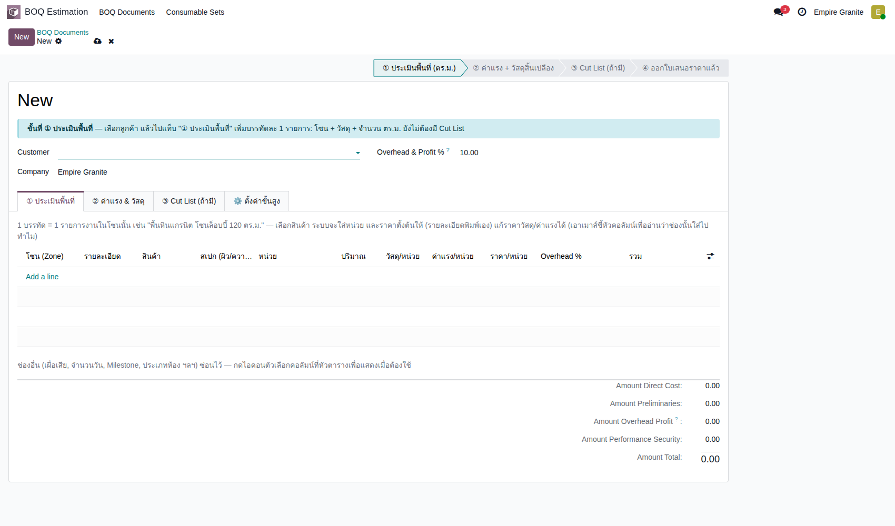 |
| TC-GP-BQ4-02 | เพิ่มบรรทัดหิน 2 โซน พร้อมระยะเวลาและ Milestone แล้วบันทึก รายละเอียด (ชื่องาน) ต้องพิมพ์เอง ระบบไม่เขียนทับให้ · คลิกทีละช่องแล้วพิมพ์ อย่ากด Enter หรือ Tab ข้ามช่อง · ขนาดชิ้นทำให้ระบบแตกรายชิ้นให้เองตอนออกใบเสนอราคา |
ทำ TC-GP-BQ4-01 เสร็จแล้ว |
|
ห้องอาหาร 7.2 ตร.ม. 5 วัน · ทางเดิน 3.6 ตร.ม. 3 วัน · ราคา 3,800 ต่อ ตร.ม. | ห้องอาหาร รวม 27,360.00 · ทางเดิน รวม 13,680.00 · Amount Direct Cost 41,040.00 · Overhead & Profit 4,104.00 · Amount Total 45,144.00 · ได้เลข BOQ (รอบทดสอบ BOQ1184) | High | 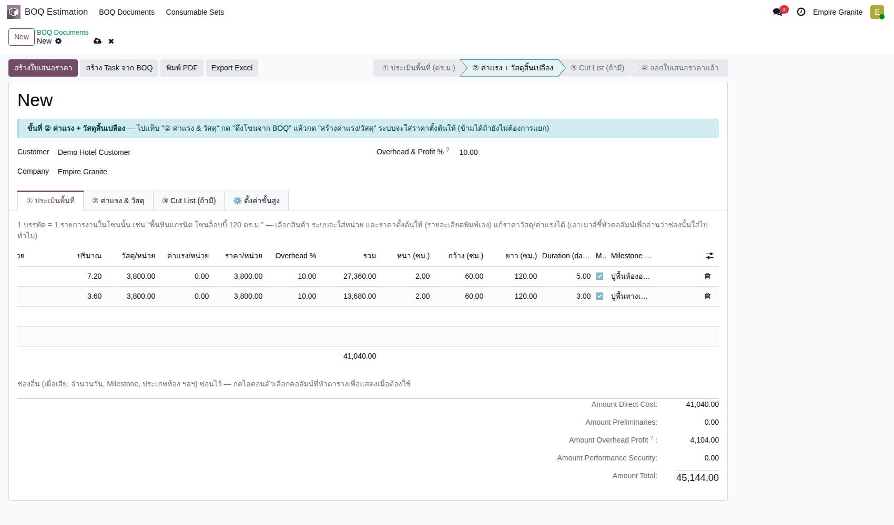 |
| TC-GP-BQ4-03 | ออกใบเสนอราคาจาก BOQ ขนาด ราคา โซน และระยะเวลาติดมาจาก BOQ ไม่ต้องกรอกซ้ำ |
ทำ TC-GP-BQ4-02 เสร็จแล้ว |
|
- | ใบเสนอราคา (รอบทดสอบ S01748) ช่อง BOQ Document ชี้ BOQ1184 · จัดหมวดตามโซน ห้องอาหาร 7.200 m² × 3,800.00 ขนาด 60 × 120 ซม. × 10 ชิ้น · ทางเดิน 3.600 m² × 3,800.00 × 5 ชิ้น · ค่าบริหารโครงการ 4,104.00 · ก่อน VAT 45,144.00 · รวม VAT 48,304.08 | High | 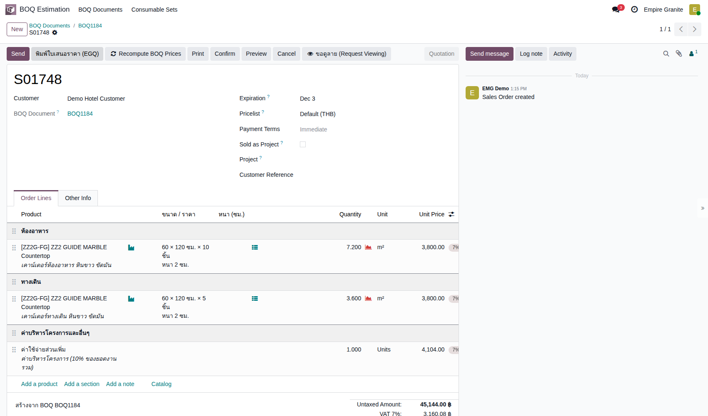 |
B. ขายเป็นโปรเจกต์
ติ๊ก Sold as Project · Confirm · Project และ Task ที่ระบบสร้าง · 3 test cases
| TC ID | Scenario | Precondition | Steps | ข้อมูลตัวอย่าง | Expected Result | Priority | ภาพหน้าจอ |
|---|---|---|---|---|---|---|---|
| TC-GP-BQ4-04 | ติ๊ก Sold as Project ก่อนยืนยัน ต้องติ๊กและ Save ก่อน Confirm · ถ้าลืม ใบที่ Confirm แล้วจะไม่ได้ Project (พบจากการเดินจริง) · การติ๊กหลังยืนยันแล้วยังไม่ได้ทดลอง |
ทำ TC-GP-BQ4-03 เสร็จแล้ว |
|
- | ช่อง Sold as Project มีเครื่องหมายถูก · เกิดช่อง Project และ Link to Existing Project · คอลัมน์ Zone / Schedule ขึ้นในตารางบรรทัด | High | 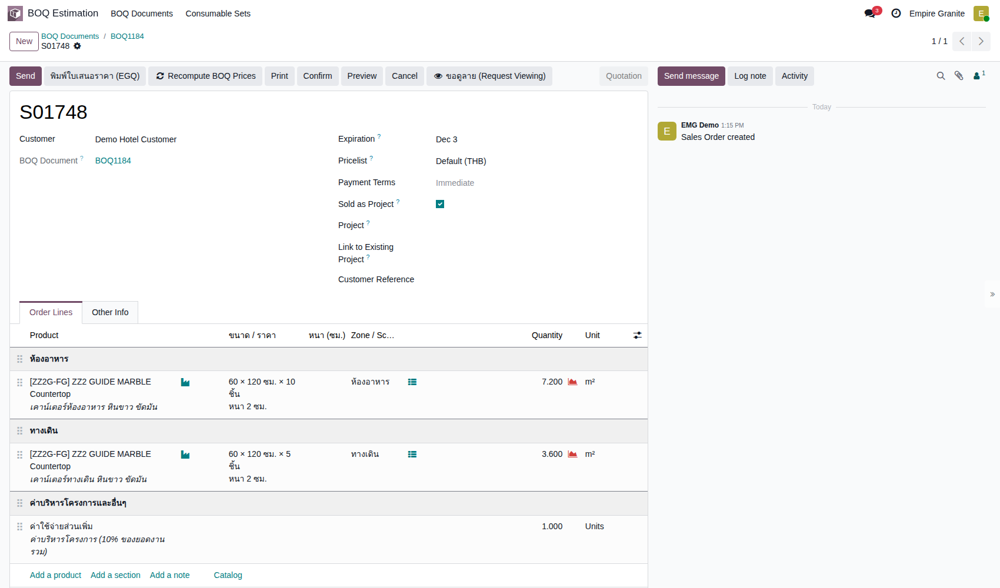 |
| TC-GP-BQ4-05 | Confirm แล้วได้ Project ใบสั่งผลิตและใบส่งของ ปุ่ม Tasks นับ Task ที่ผูกกับบรรทัดขายด้วย และกดแล้วเปิดรายการ Task ทั้งสองใบ (เดิมแสดง 0 และรายการว่าง แก้แล้ว 19.0.2.109.67) · ภาพถ่ายหลังจบทั้งเส้นทาง จึงมีปุ่ม Invoices และบรรทัด Down Payments เพิ่ม |
ทำ TC-GP-BQ4-04 เสร็จแล้ว · มี Slab ZZ2 GUIDE MARBLE ที่ Available อย่างน้อย 3 แผ่น |
|
- | ใบสั่งขาย (S01748) · ปุ่มสมาร์ท Projects 1 · Tasks 2 · Delivery 1 · FG Production 2 · ยอดเดิม 45,144.00 / 48,304.08 | High | 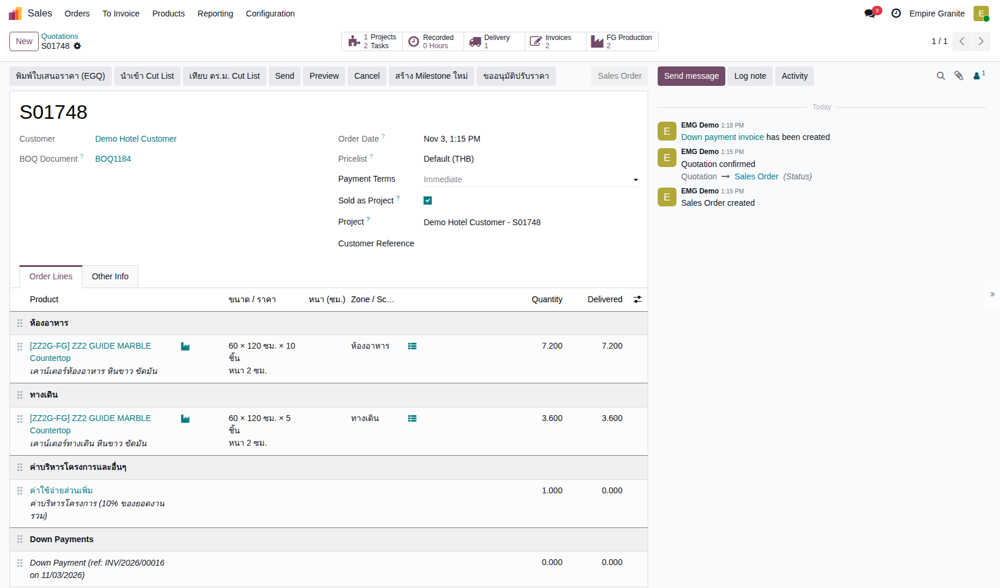 |
| TC-GP-BQ4-06 | ดู Project และ Task ที่ระบบสร้าง ข้อมูลจาก BOQ (โซน มูลค่า Milestone วันที่) ติดมาที่ Task ครบ ไม่ต้องกรอกซ้ำ |
ทำ TC-GP-BQ4-05 เสร็จแล้ว |
|
- | 2 Task ในคอลัมน์ To Do: เคาน์เตอร์ห้องอาหาร และ เคาน์เตอร์ทางเดิน · Task ห้องอาหาร: Zone ห้องอาหาร · Origin Sale Line Value 27,360.00 · Progress % 0 · Milestone ปูพื้นห้องอาหารเสร็จ · Planned Date ห่างกัน 5 วัน | High | 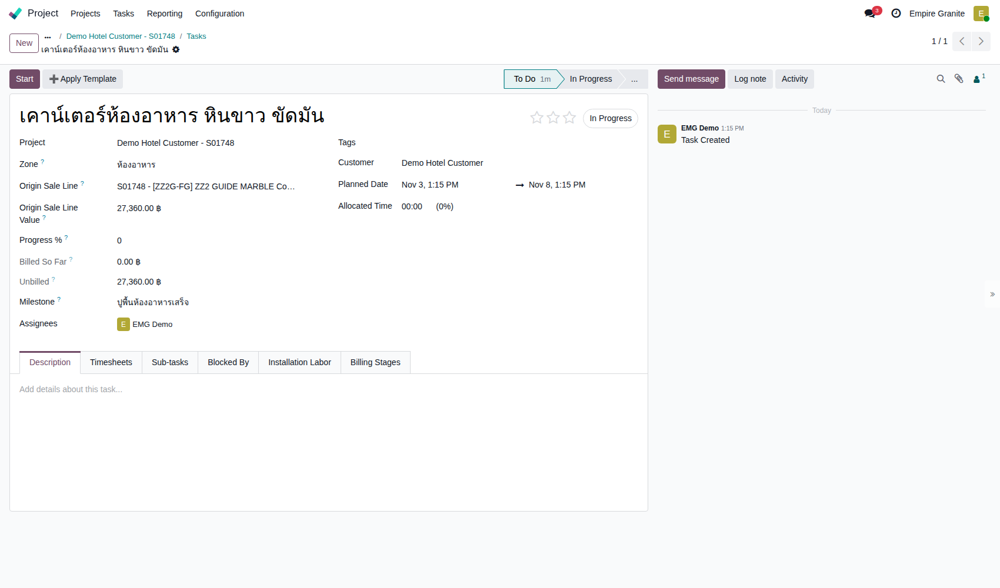 |
C. วางแผนงวดเก็บเงิน และผลิต
Allocated Time และ Billing Stages · ผลิต 2 ใบสั่งผลิต · Slab ไม่ซ้ำกัน · 3 test cases
| TC ID | Scenario | Precondition | Steps | ข้อมูลตัวอย่าง | Expected Result | Priority | ภาพหน้าจอ |
|---|---|---|---|---|---|---|---|
| TC-GP-BQ4-07 | ตั้ง Allocated Time และงวดเก็บเงิน 2 งวด Progress ของ Task = ชั่วโมงที่ลงเวลา ÷ Allocated Time · ยอดที่ควรวางบิลงวดนี้เป็นยอดก่อน VAT |
ทำ TC-GP-BQ4-06 เสร็จแล้ว |
|
Allocated Time 10 ชั่วโมง · งวด 30% และ 100% | ยอดที่ควรวางบิลงวดนี้: งวด 1 = 8,208.00 (30% × 27,360) · งวด 2 = 19,152.00 · รวม 27,360.00 พอดี · สถานะ ยังไม่ได้ออกบิล ทั้งสองงวด | High | 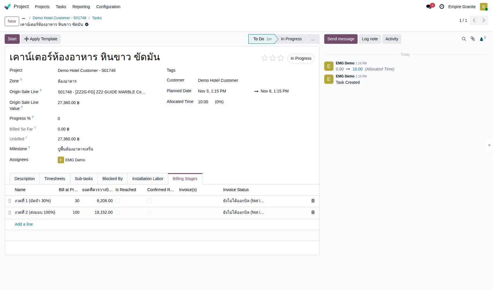 |
| TC-GP-BQ4-08 | ใบสั่งผลิตสองใบ ระบบเลือก Slab คนละแผ่น เคยเป็นบั๊ก (Slab ซ้ำ) แก้แล้วในเส้นทาง 3 · ที่นี่ใช้ตรวจซ้ำกับงานแบบโปรเจกต์ |
ทำ TC-GP-BQ4-05 เสร็จแล้ว |
|
- | ใบห้องอาหาร (EG01/STFG/00467) Draft แผ่นที่เลือก BLK-26-1482-35 และ -36 (8.70 ตร.ม.) · ใบทางเดิน (00468) ได้ BLK-26-1482-37 คนละแผ่น | High | 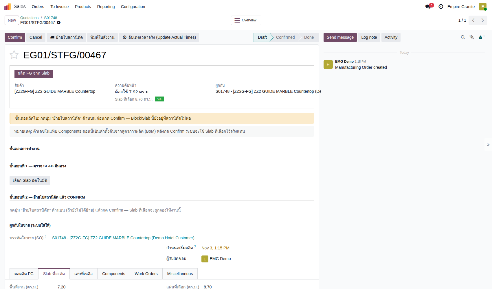 |
| TC-GP-BQ4-09 | ผลิตทั้งสองใบจนเสร็จ และดูต้นทุนค่าแรงโรงงาน ต้องกด ย้ายไปสถานีตัด ก่อน Confirm · หลังกด ผลิต FG เสร็จ ให้รีเฟรชหน้า เพราะหน้าจออาจยังโชว์สถานะเดิมช่วงสั้นๆ |
ทำ TC-GP-BQ4-08 เสร็จแล้ว |
|
- | ทั้งสองใบสถานะ Done · รายการบัญชีค่าแรง FG Production Labor 10,800.00 (7.20 × 1,500) และ 5,400.00 (3.60 × 1,500) | High | 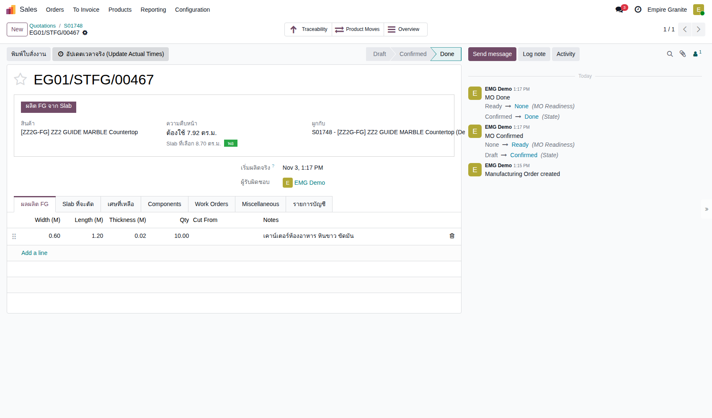 |
D. ความคืบหน้า และเก็บเงินงวดแรก
ลงเวลา 3 ชั่วโมง = 30% · ยืนยันพร้อมเก็บเงิน · Down Payment · ผูกใบแจ้งหนี้กับงวด · ส่งของ · 5 test cases
| TC ID | Scenario | Precondition | Steps | ข้อมูลตัวอย่าง | Expected Result | Priority | ภาพหน้าจอ |
|---|---|---|---|---|---|---|---|
| TC-GP-BQ4-10 | ลงเวลา 3 ชั่วโมง ความคืบหน้าเป็น 30% ช่องพนักงานไม่ต้องกรอก ระบบใส่ให้ตอนบันทึก · ชั่วโมงทำหน้าที่เป็นคะแนนความคืบหน้า |
ทำ TC-GP-BQ4-09 เสร็จแล้ว |
|
3 ชั่วโมง ÷ 10 ชั่วโมง | Progress % เป็น 30 · Allocated Time 10:00 (30%) | High | 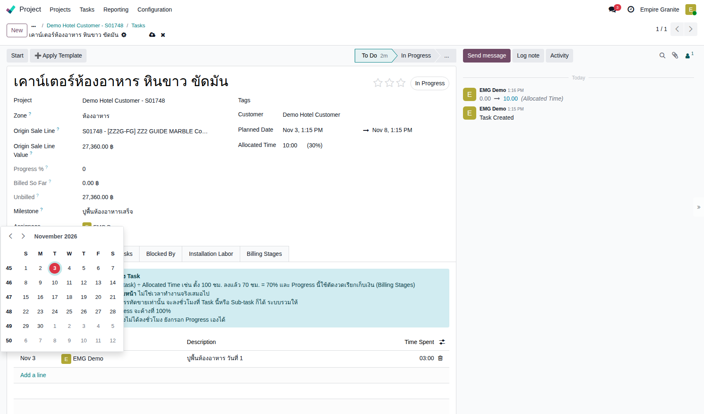 |
| TC-GP-BQ4-11 | งวดที่ 1 ถึงเกณฑ์ แล้วกดยืนยันพร้อมเก็บเงิน การกดยืนยันไม่ได้สร้างใบแจ้งหนี้ เป็นแค่การรับทราบของผู้จัดการโปรเจกต์ |
ทำ TC-GP-BQ4-10 เสร็จแล้ว |
|
- | ก่อนกด: Is Reached ✓ และมีปุ่ม ยืนยันพร้อมเก็บเงิน · หลังกด: Confirmed Ready to Bill ✓ ปุ่มหาย · Chatter ขึ้นข้อความ PM ยืนยันพร้อมเก็บเงิน งวดที่ 1 · งวดที่ 2 ยังไม่ถึงเกณฑ์ | High | 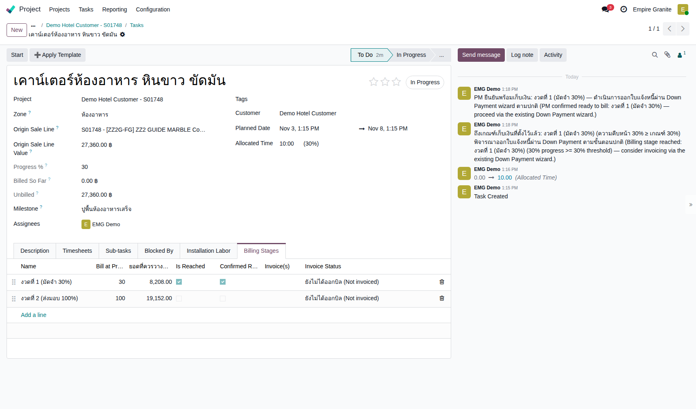 |
| TC-GP-BQ4-12 | ออกใบแจ้งหนี้งวดแรก (Down Payment รวม VAT) ช่อง Down Payment รับยอดรวม VAT ให้กรอกตามคอลัมน์ ยอดรวม VAT ของงวดที่ Task (8,208 บวก VAT 7% = 8,782.56) ซึ่งเพิ่มให้แล้ว 19.0.2.109.67 (อยู่ในประเด็นที่ต้องยืนยัน) |
ทำ TC-GP-BQ4-11 เสร็จแล้ว |
|
8,782.56 บาท (รวม VAT) | ใบแจ้งหนี้ (รอบทดสอบ INV/2026/00016) Posted · บรรทัด Down Payment · ก่อน VAT 8,208.00 · VAT 574.56 · รวม 8,782.56 | High | 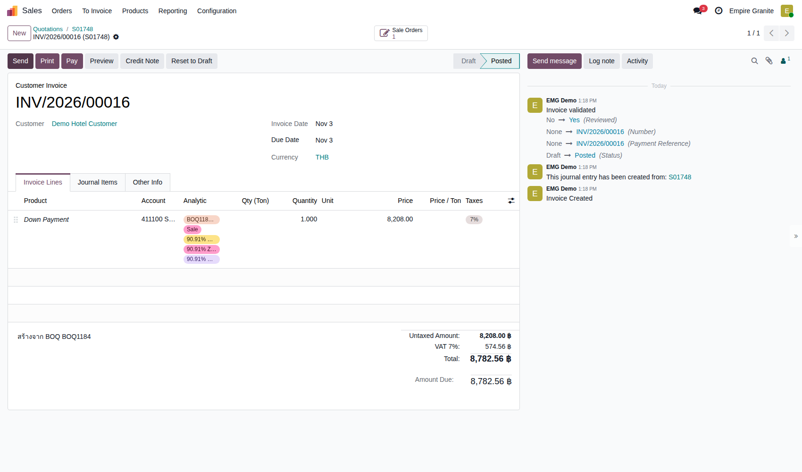 |
| TC-GP-BQ4-13 | ผูกใบแจ้งหนี้กับงวดที่ 1 ระบบไม่ผูกให้เอง ต้องเลือกที่ช่อง Invoice(s) · ช่อง Billed So Far นับก่อน VAT (แก้แล้ว 19.0.2.109.66 เดิมนับรวม VAT) |
ทำ TC-GP-BQ4-12 เสร็จแล้ว |
|
- | งวดที่ 1: สถานะ ออกบิลแล้ว รอชำระ · Billed So Far 8,208.00 · Unbilled 19,152.00 | High | |
| TC-GP-BQ4-14 | ส่งของตามใบส่งของ ใบส่งของใบเดียวครอบทั้งสองโซน |
ทำ TC-GP-BQ4-09 เสร็จแล้ว |
|
- | ใบส่งของ (EG01/OUT/00754) Ready ก่อนกด · 2 บรรทัด 7.200 m² และ 3.600 m² · หลัง Validate สถานะ Done | High | 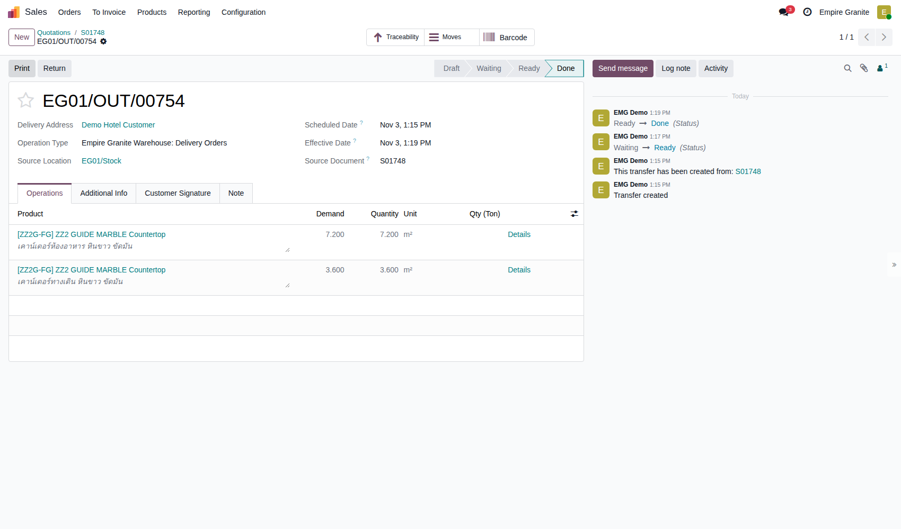 |
E. ติดตั้ง ปิดงาน และเก็บเงินงวดสุดท้าย
100% งวดที่ 2 · ค่าแรงติดตั้ง · ปิด Task ให้ Milestone ถึงเป้า · ใบแจ้งหนี้สุดท้าย · P&L ต่อโปรเจกต์ · 6 test cases
| TC ID | Scenario | Precondition | Steps | ข้อมูลตัวอย่าง | Expected Result | Priority | ภาพหน้าจอ |
|---|---|---|---|---|---|---|---|
| TC-GP-BQ4-15 | ลงเวลาที่เหลือ 7 ชั่วโมง ความคืบหน้า 100% และยืนยันงวดที่ 2 - |
ทำ TC-GP-BQ4-13 เสร็จแล้ว |
|
3 + 7 = 10 ชั่วโมง | Progress % 100 · งวดที่ 2: Is Reached ✓ แล้ว Confirmed Ready to Bill ✓ | High | 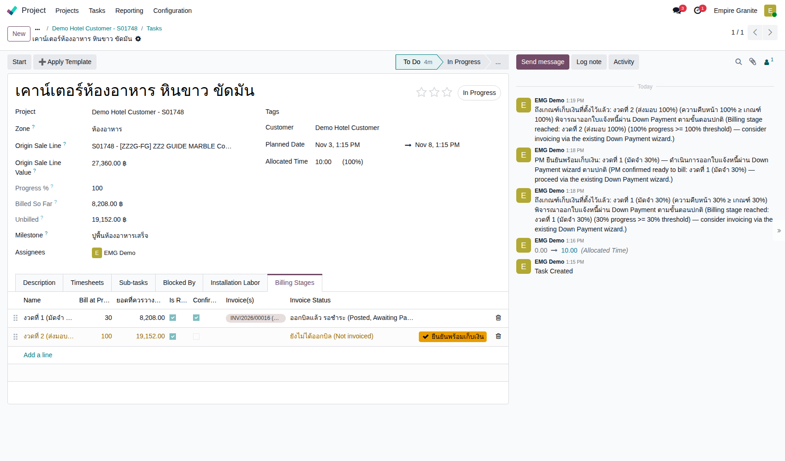 |
| TC-GP-BQ4-16 | บันทึกค่าแรงติดตั้งหน้างาน (พนักงานบริษัทเอง) ต้องตั้งอัตราค่าแรงติดตั้งต่อวันที่บริษัท (ตัวอย่าง 1,200) และมีบัญชี COGS - Site Installation Labor ก่อน · ลงได้ครั้งเดียวต่อ Task · ห้ามใช้ซ้อนกับชุดค่าแรงติดตั้งใน BOQ (นับซ้ำ) |
ทำ TC-GP-BQ4-15 เสร็จแล้ว · ตั้งอัตราค่าแรงติดตั้งต่อวันและบัญชีแล้ว |
|
2 วัน × 1,200 | Stone Install Labor Amount 2,400.00 · หลังกดปุ่ม เปลี่ยนเป็น แก้ไข/ยกเลิกรายการ · Chatter: บันทึกค่าแรงติดตั้งแล้ว 2 วัน x 1200 = 2400 บาท (JE MISC/2026/11/0029) | High | 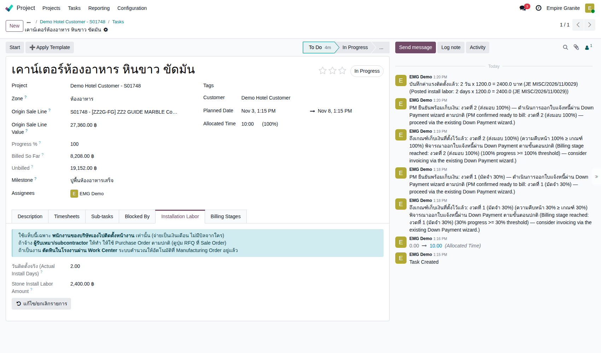 |
| TC-GP-BQ4-17 | ปิด Task ทั้งสองใบ Milestone ถึงเป้า Task ทางเดิน: วันติดตั้ง 1 วัน = 1,200.00 ไม่มีงวดเก็บเงิน |
ทำ TC-GP-BQ4-16 เสร็จแล้ว |
|
- | ทั้งสอง Task สถานะ Done · Chatter: Task done (In Progress → Done) · Milestone ปูพื้นห้องอาหารเสร็จ และ ปูพื้นทางเดินเสร็จ ถึงเป้าทั้งคู่ · ค่าแรงติดตั้ง 2,400.00 + 1,200.00 | High | 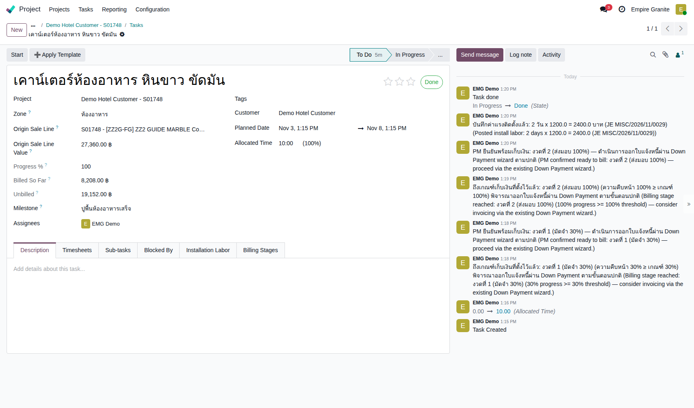 |
| TC-GP-BQ4-18 | ใบแจ้งหนี้สุดท้าย หัก Down Payment ค่าบริหารโครงการ 4,104.00 ไม่อยู่ในงวดของ Task จึงเก็บในใบนี้ |
ทำ TC-GP-BQ4-14 และ TC-GP-BQ4-17 เสร็จแล้ว |
|
- | ใบแจ้งหนี้ (รอบทดสอบ INV/2026/00017) Posted · ห้องอาหาร 7.200 · ทางเดิน 3.600 · ค่าบริหารโครงการ 4,104.00 · บรรทัดหัก Down Payment −8,208.00 · ก่อน VAT 36,936.00 · VAT 2,585.52 · รวม 39,521.52 | High | 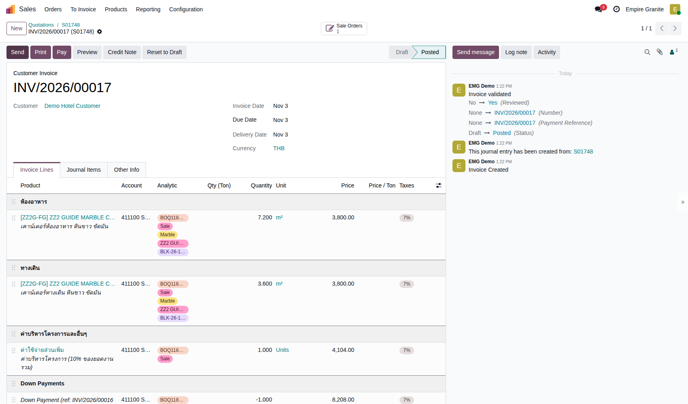 |
| TC-GP-BQ4-19 | ผูกใบแจ้งหนี้สุดท้ายกับงวดที่ 2 รวมเก็บเงิน 8,782.56 + 39,521.52 = 48,304.08 เท่ายอดใบเสนอราคารวม VAT |
ทำ TC-GP-BQ4-18 เสร็จแล้ว |
|
- | งวดที่ 1 และ 2 ขึ้น ออกบิลแล้ว รอชำระ ทั้งคู่ | Medium | 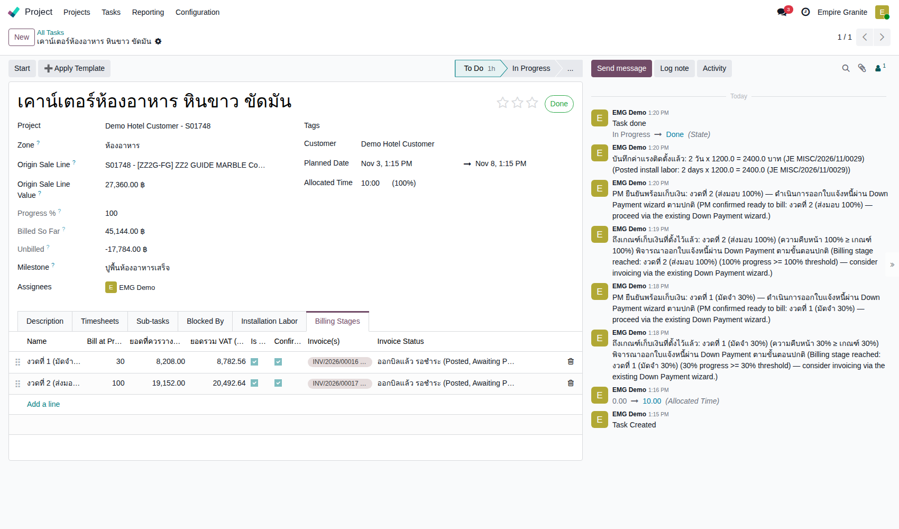 |
| TC-GP-BQ4-20 | ดูกำไรของโปรเจกต์ที่ P&L คอลัมน์ Total ข้างๆ คือทุกงานรวมกัน ไม่ใช่ของโปรเจกต์นี้ · ต้องติ๊ก Sold as Project ก่อน Confirm จึงแยกโปรเจกต์ได้ |
ทำ TC-GP-BQ4-19 เสร็จแล้ว |
|
- | คอลัมน์ BOQ1184: Revenue 45,144.00 · COGS - Stone Sales 12,223.68 · COGS - FG Production (Fabrication) 16,200.00 · COGS - Site Installation Labor 3,600.00 · Less Costs of Revenue 32,023.68 · Gross Profit 13,120.32 | High | 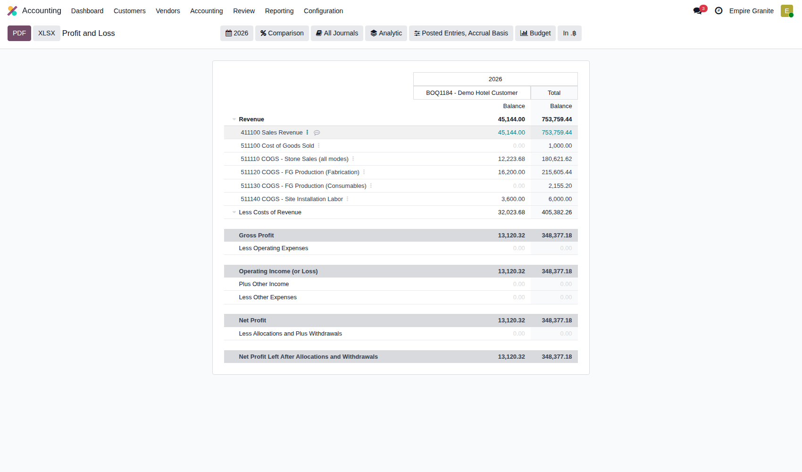 |